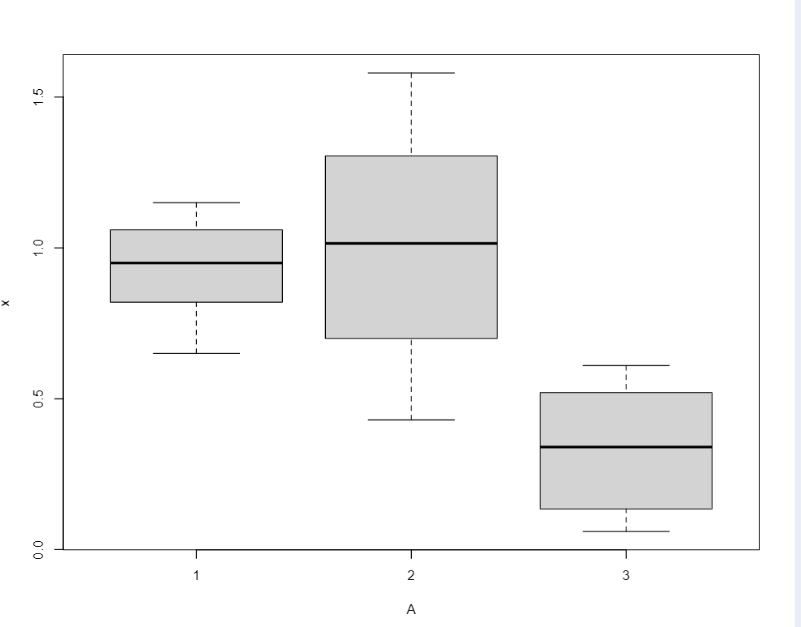

solvent <- data.frame( x = c( 1.06, 0.79, 0.82, 0.89, 1.05, 0.95, 0.65, 1.15, 1.12, 1.58, 1.45, 0.57, 1.16, 1.12, 0.91, 0.83, 0.43, 0.29, 0.06, 0.44, 0.61, 0.55, 0.43, 0.51, 0.10, 0.34, 0.53, 0.06, 0.09, 0.17, 0.60, 0.17 ), A = factor(rep(1:3, c(9, 8, 15))) ) attach(solvent) print(tapply(x, A, mean)) print(pairwise.t.test(x, A)) plot(x~A)
data: x and A
| 1 | 2 | |
|---|---|---|
| 2 | 0.62 | - |
| 3 | 9.8e-06 | 5.5e-06 |
P value adjustment method: holm

所以芬芳剂于氯烷吸附率无较大差异,儿酯类与两者吸附率差异大
(1)
person <- data.frame( X = c( 62, 60, 60, 25, 24, 23, 20, 13, 12, 6, 62, 62, 24, 24, 22, 20, 19, 10, 8, 8, 37, 31, 15, 15, 14, 14, 14, 5, 3, 2 ), A = factor(rep(1:3, c(10, 10, 10))) ) print(kruskal.test(X ~ A, data = person))
Kruskal-Wallis rank sum test
data: X by A
Kruskal-Wallis chi-squared = 3.2535, df = 2, p-value = 0.1966
Kruskal-Wallis 秩和检验的,说明平均测试分数无明显差异
(2)
x <- c(62, 60, 60, 25, 24, 23, 20, 13, 12, 6) y <- c(62, 62, 24, 24, 22, 20, 19, 10, 8, 8) z <- c(37, 31, 15, 15, 14, 14, 14, 5, 3, 2) print(shapiro.test(x)) print(shapiro.test(y)) print(shapiro.test((z)))
Shapiro-Wilk normality test
data: x
W = 0.81494,
Shapiro-Wilk normality test
data: y
W = 0.76284,
Shapiro-Wilk normality test
data: (z)
W = 0.86148,
所以前两组数据不满足正态分布要求
person <- data.frame( X = c( 62, 60, 60, 25, 24, 23, 20, 13, 12, 6, 62, 62, 24, 24, 22, 20, 19, 10, 8, 8, 37, 31, 15, 15, 14, 14, 14, 5, 3, 2 ), A = factor(rep(1:3, c(10, 10, 10))) ) print(bartlett.test(X ~ A, data = person))
Bartlett test of homogeneity of variances
data: X by A
所以方差是齐性的
综上所述,三组数据满足方差齐性,但不满足正态分布要求,所以需要用到秩和检验
3.
library(MASS) train <- matrix( c( 1.24, 1.36, 1.38, 1.38, 1.38, 1.40, 1.48, 1.54, 1.56, 1.14, 1.18, 1.20, 1.26, 1.28, 1.30, 1.27, 1.74, 1.64, 1.82, 1.90, 1.70, 1.82, 1.82, 2.08, 1.78, 1.96, 1.86, 2.00, 2.00, 1.96 ), ncol = 2 ) sp <- factor(rep(1:2, c(9, 6)), labels = c("Af", "Apf")) tst <- c(1.24, 1.80) lda_sol <- lda(train, sp) print(predict(lda_sol, tst)$class) print(table(sp, predict(lda_sol)$class)) qda_sol <- qda(train, sp) print(table(sp, predict(qda_sol)$class))
经检验,对三种给定的蠓虫,两种方法计算的结果都为:
lda:
| sp | Af | Apf |
|---|---|---|
| Af | 9 | 0 |
| Apf | 0 | 6 |
qda;
| sp | Af | Apf |
|---|---|---|
| Af | 9 | 0 |
| Apf | 0 | 6 |